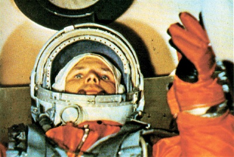
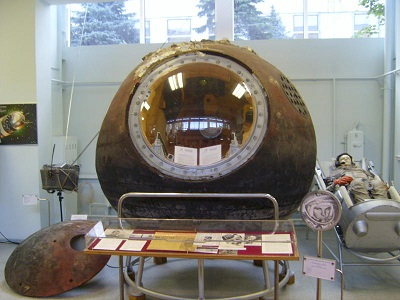

Полёт и возвращение на Землю
Старт корабля «Восток» с пилотом-космонавтом Юрием Алексеевичем Гагариным на борту был произведён 12 апреля 1961 года в 09:07 по московскому времени (06:07 UTC) с космодрома Байконур. Позывной Гагарина во время полёта — «Кедр».
В самом начале подъёма ракеты Гагарин произнёс фразу, которая на сегодняшний день уже успела стать крылатой: «Поехали!».
Ракета-носитель «Восток» проработала без замечаний, но на завершающем этапе не сработала система радиоуправления, которая должна была выключить двигатели 3-й ступени. Выключение двигателя произошло только после срабатывания дублирующего механизма (таймера), но корабль уже поднялся на орбиту, высшая точка которой (апогей) оказалась на 100 км выше расчётной. Сход с такой орбиты с помощью «аэродинамического торможения» мог занять по разным оценкам от 20 до 50 дней.
На орбите Гагарин сообщал о своих ощущениях, состоянии корабля и наблюдениях. Он в иллюминатор наблюдал Землю с её облачностью, горами, лесами, реками, морями, видел небо и Солнце, другие звёзды во время полёта в тени Земли. Ему нравился вид Земли из космоса, так, он, в частности, записал на бортовой магнитофон такие слова:
Наблюдаю облака над Землёй, мелкие кучевые, и тени от них. Красиво, красота!… Внимание. Вижу горизонт Земли. Очень такой красивый ореол. Сначала радуга от самой поверхности Земли и вниз. Такая радуга переходит. Очень красиво!
Гагарин также провёл простейшие эксперименты: пил, ел, делал записи карандашом. «Положив» карандаш рядом с собой, он случайно обнаружил, что тот моментально начал уплывать. Из этого Гагарин сделал вывод, что карандаши и прочие предметы в космосе лучше привязывать. Все свои ощущения и наблюдения он записывал на бортовой магнитофон. До полёта ещё не было известно, как человеческая психика будет вести себя в космосе, поэтому была предусмотрена специальная защита от того, чтобы первый космонавт в порыве помешательства не попытался бы управлять полётом корабля или испортить аппаратуру. Чтобы включить ручное управление, ему надо было вскрыть запечатанный конверт, внутри которого лежал листок с математической задачей, при решении которой получался код разблокировки панели управления.
В конце полёта тормозная двигательная установка проработала успешно, но с недобором импульса, так что автоматика выдала запрет на штатное разделение отсеков. В результате в течение 10 минут перед входом в атмосферу корабль беспорядочно кувыркался со скоростью 1 оборот в секунду. Гагарин решил не пугать руководителей полёта (в первую очередь — Королёва) и в условном выражении сообщил о нештатной ситуации на борту корабля. Когда корабль вошёл в более плотные слои атмосферы, соединяющие кабели перегорели, а команда на разделение отсеков поступила уже от термодатчиков, после чего спускаемый аппарат наконец отделился от приборно-двигательного отсека.
Спуск происходил по баллистической траектории, то есть с 8—10-кратными перегрузками, к которым Гагарин был готов. Сложнее было пережить психологические нагрузки — после входа капсулы в атмосферу загорелась обшивка (температура снаружи при спуске достигает 3—5 тысяч °C), по стёклам иллюминаторов потекли струйки расплавленного металла, а сама кабина начала потрескивать.
На высоте 7 км в соответствии с планом полёта Гагарин катапультировался, после чего капсула и космонавт стали спускаться на парашютах раздельно. После катапультирования и отсоединения воздуховода спускаемого аппарата, в герметичном скафандре Гагарина не сразу открылся клапан, через который должен поступать наружный воздух, так что космонавт некоторое время испытывал серьёзное затруднение с дыханием. Последней проблемой в этом полёте оказалось место посадки — Гагарин мог опуститься в ледяную воду Волги. Космонавту помогла хорошая предполётная подготовка — управляя стропами, он увёл парашют от реки и приземлился в 1,5—2 километрах от берега.
Выполнив один оборот вокруг Земли, в 10:53 на 106-й минуте корабль завершил полёт. Из-за сбоя в системе торможения спускаемый аппарат с Гагариным приземлился не в запланированной области в 110 км от Сталинграда, а в Саратовской области, неподалёку от Энгельса в районе сёл Смеловка и Подгорное. В 10:48 радар близлежащего зенитно-ракетного дивизиона засёк неопознанную цель — это был спускаемый аппарат (зенитчиков за сутки до этого предупредили, чтобы они следили за «контейнерами с неба»). После катапультирования целей на радаре стало две.
Относительно обстоятельств встречи Гагарина есть разные версии.
12.04.1961 г. в 10 час. 55 мин. 2 км юго-восточнее н. п. Подгорное приземлился лётчик-космонавт майор ГАГАРИН Юрий Алексеевич, совершивший первый космический полёт на космическом корабле «Восток». Первый заметил ефр. Сапельцев В. Г., а прибыл к месту приземления майор Гассиев А. Н., который доставил первого в мире лётчика-космонавта Героя Советского Союза майора ГАГАРИНА ЮРИЯ АЛЕКСЕЕВИЧА в подразделение для встречи с личным составом.
— Выписки из Исторического формуляра в/ч 40218, раздел VII. Лист № 4, параграф 6.
По другим сведениям, первыми людьми, которые встретили космонавта после полёта, оказались жена местного лесника Анна (Анихайят) Тахтарова и её шестилетняя внучка Рита (Румия). Вскоре к месту событий прибыли военные из дивизиона и местные колхозники. Одна группа военных взяла под охрану спускаемый аппарат, а другая повезла Гагарина в расположение части. Оттуда Гагарин по телефону отрапортовал командиру дивизии ПВО:
«Прошу передать главкому ВВС: задачу выполнил, приземлился в заданном районе, чувствую себя хорошо, ушибов и поломок нет. Гагарин».
Тем временем с аэродрома Энгельс вылетел вертолёт Ми-4, в задачу экипажа которого входило найти и подобрать Гагарина.
На аэродроме в Энгельсе Гагарина уже ждали, у трапа вертолёта было всё руководство базы. Ему вручили поздравительную телеграмму Советского правительства. На автомобиле «Победа» Гагарина повезли на командно-диспетчерский пункт, а затем в штаб базы для связи с Москвой.
К полудню на аэродром Энгельс с Байконура прибыли два самолёта: Ил-18 и Ан-10, на которых прибыли заместитель командующего ВВС генерал-лейтенант Агальцов и группа журналистов. С появлением связи он лично доложил Хрущёву (Первому секретарю ЦК КПСС) и Брежневу (Председателю Президиума Верховного Совета СССР) о выполнении полёта.
После доклада Гагарин и группа сопровождающих лиц сели в Ил-14 и полетели в Куйбышев (сейчас Самара). На аэродроме уже собралось много народу (включая рабочих и инженеров расположенного рядом с аэродромом завода «Прогресс», где, кстати, и была выпущена ракета Р-7, на которой стартовал в космос корабль «Восток» с Гагариным на борту), приехало городское партийное руководство. Когда смонтировали трап, первым вышел из самолёта Гагарин, он поприветствовал собравшихся. Гагарина увезли на дачу на берегу Волги. Там он принял душ и нормально поел. Через три часа после прилёта в Куйбышев Гагарина, туда же прилетели Королёв и ещё несколько человек из Госкомиссии. В 21 час накрыли стол и отпраздновали удачный полёт в космос.